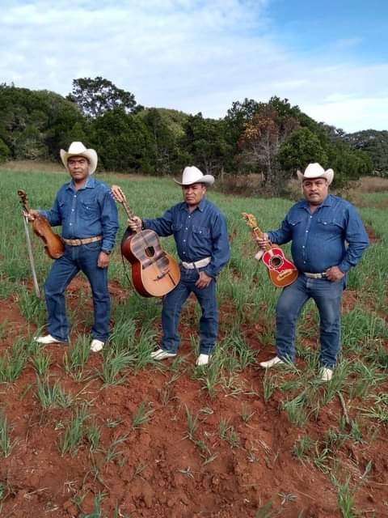

En el Durazno se cuenta con una gran biodiversidad contando que sus climas varian desde calidos asta frios. al colindar con los ejidos de el toro, carricillo que son de la parte de arriba, San Anton, Cerro prieto y Mezquital de la zona de abajo de este lugar
En la zona baja de la comunidad en cuanto a la fauna encontramos lagartos, liebres, corre caminos, serpientes, lobos, mapaches, tlacuaches, aves de rapiña y mas y donde la fauna es de cedro, huisache, gatillo, oregano y mas
Mientras que en la zona alta encontramos leones de montaña, coyotes, armadillos ardillas, venados, guacamayas ( estas solo en tempotrada emigran a dicha comunidad ), serpientes, gatos montes, guajolotes de bosque, godornises. la flora de esta consiste un clima mas humedo el cual es de piñones, pinos, robles, encinos teposanes y mas encuanto flores silvestres hay una gran variedad.
El durazno al contar con dos ecosistemas cuenta con gran variedad de flora y fauna igual enriquesido por el manantial de agua que nase a lo profundo de la tierra permite que la fauna y flora permanescan


economía, dempleo y vivienda en El Durazno
Población ocupada laboralmente mayor de 12 años: |
18.47% |
26.21% |
Población ocupada laboralmente mayor de 12 años (hombres): |
31.97% |
53.91% |
Población ocupada laboralmente mayor de 12 años (mujeres): |
5.51% |
2.26% |
Número de viviendas particulares habitadas: |
66 |
74 |
Viviendas con electricidad: |
96.97% |
90.16% |
Viviendas con agua entubada: |
6.06% |
0.00% |
Viviendas con excusado o sanitario: |
37.88% |
22.95% |
Viviendas con radio: |
71.21% |
60.66% |
Viviendas con televisión: |
83.33% |
59.02% |
Viviendas con refrigerador: |
59.09% |
31.15% |
Viviendas con lavadora: |
46.97% |
11.48% |
Viviendas con automóvil: |
15.15% |
14.75% |
Viviendas con computadora personal, laptop o tablet: |
7.58% |
1.64% |
Viviendas con teléfono fijo: |
1.52% |
4.92% |
Viviendas con teléfono celular: |
45.45% |
1.64% |
Viviendas con Internet: |
16.67% |
0.00% |
Comparación de porcentajes de personas solteras en El Durazno (mayores de 12 años), comparando el mismo porcentaje con el municipio, con el Estado de Guanajuato, y con el total del país.


En el durazno las creencias son que los dias que se celebra la samta cruz se debe de rezar 5 rosarios para que llueva y casualmente siempre lluve y se festeja el 04 de mayo tambien que en la semana santa el dia viernes y sabado no se debe de bañar y no comer carne roja tambien que en las fiestas se debe de enterrar un cuchillo en el patio de la casa para que no llueva y que pasando las 12 de la noche a las 3 de la mañana no se debe pasar por los depositos de agua porque pasan hechos paranormales
la religion consta de personas mayoritariamente catolitas aun que 2 o 3 familias son de religion ateos o creyentes de jeova
La cultura tambien consta de los musicos de su region que son los Hermanos Hernandez representan el estilo y cultrura que tiene el durazno al traer sonidos huapango